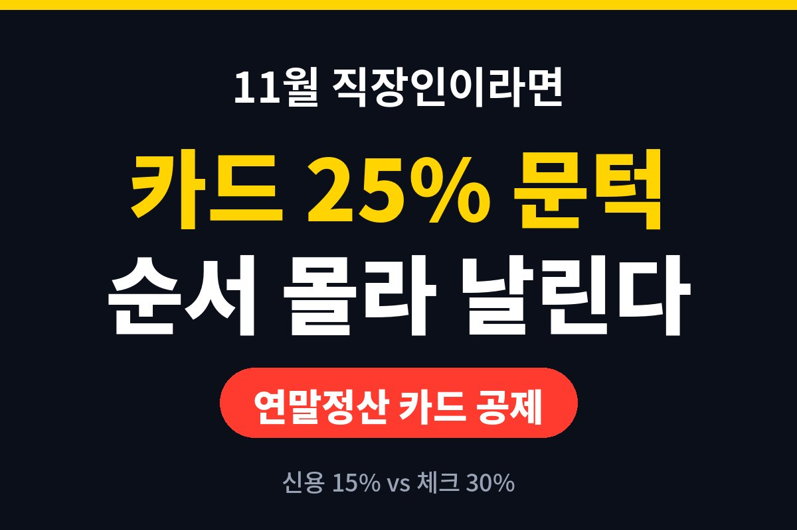

연말정산 카드 공제는 카드로 쓴 돈이 총급여의 25%를 넘어야 그 초과분부터 공제가 시작됩니다. 문턱을 못 넘으면 아무리 많이 긁어도 공제액은 0원이에요.
11월 지금, 올해 카드값이 얼마나 쌓였는지 모르는 직장인이라면 12월 결제 순서가 환급을 가를 수 있다는 걸 아셨나요?
카드 공제는 쓴 금액 전부를 깎아주는 제도가 아니에요. 내 연봉(총급여)의 25%까지는 공제 대상이 아니고, 그걸 넘긴 금액에만 공제율을 곱해줍니다. 쉽게 말해 문턱 아래 지출은 공제와 상관없는 돈이라는 뜻이죠.
그래서 연말정산 카드 공제를 챙기려면 가장 먼저 내 총급여 대비 카드 사용액이 어디쯤인지 확인해야 해요. 이걸 모르고 연말에 갑자기 카드를 몰아 쓰면, 문턱도 못 넘고 지출만 늘어나는 낭패를 볼 수 있거든요.
확인은 어렵지 않습니다. 국세청 연말정산 간소화 서비스에서 올해 1월부터 현재까지의 사용액을 미리 볼 수 있는 시기가 있고, 카드사 앱에서도 연간 사용 내역을 조회할 수 있어요. 일단 내 숫자를 알아야 전략이 나옵니다.
공제율이 다릅니다. 신용카드는 15%, 체크카드와 현금영수증은 30%로 두 배 차이가 나요. 같은 10만 원을 써도 공제받는 금액이 달라지는 거죠.
| 결제 수단 | 공제율 |
| 신용카드 | 15% |
| 체크카드·현금영수증 | 30% |
다만 여기서 함정이 있어요. 문턱을 넘기 전의 지출은 어떤 카드로 쓰든 공제가 안 됩니다. 그래서 순서가 중요해요. 문턱을 넘기기 전에는 혜택 좋은 신용카드로 포인트나 할인을 챙기고, 문턱을 넘긴 뒤부터는 체크카드로 갈아타는 게 일반적으로 알려진 요령입니다.
꼭 그렇진 않지만 조심해야 해요. 이미 25% 문턱을 넘겼다면 남은 기간의 체크카드 지출은 공제 효과가 큽니다. 반대로 문턱에 한참 못 미친다면, 공제 때문에 억지로 소비를 늘리는 건 득보다 실이 될 수 있어요. 공제받는 건 쓴 돈의 일부일 뿐이니까요.
이럴 땐 어차피 나갈 고정 지출을 연말 전에 미리 당겨 결제하는 정도가 현실적이에요. 새해에 낼 보험료나 공과금처럼 어차피 써야 할 돈이 대상이죠. 물론 항목마다 공제 대상 여부가 다르니 확인은 필수입니다.
참고로 공제에는 한도도 있어요. 총급여 구간에 따라 연간 공제 한도가 정해져 있어서, 아무리 많이 써도 일정 금액 이상은 공제받지 못합니다. 그러니 문턱을 넘긴 뒤에 체크카드를 무한정 쓰는 게 능사는 아니에요. 한도에 가까워졌다면 그다음부터는 포인트나 할인 혜택이 큰 신용카드로 돌아가는 편이 오히려 이득일 수 있습니다.
그리고 모든 지출이 카드 공제 대상은 아니라는 점도 기억하세요. 보험료, 세금, 공과금 일부, 자동차 구입비처럼 대상에서 빠지는 항목이 있고, 해외에서 쓴 금액도 제외되는 경우가 많습니다. 영수증만 보고 다 되겠지 하고 넘기면 나중에 실망할 수 있어요.
부부가 함께 일한다면 한쪽에 몰아주는 게 유리할 때가 많아요. 카드 공제는 연봉이 낮은 쪽이 문턱(총급여 25%)도 낮아서 먼저 넘기기 쉽거든요. 반대로 세율이 높은 쪽이 공제를 받으면 세금 줄어드는 효과가 커지기도 합니다. 두 사람의 연봉과 사용액을 같이 놓고 계산해보는 게 좋아요.
또 부양가족 카드 사용액을 합칠 수 있는지도 가족 상황에 따라 달라요. 부모님 병원비나 아이 학원비처럼 별도 공제 항목이 있는 지출은 카드 공제와 겹치지 않는지도 같이 살펴보세요.
할 일은 세 가지예요. 먼저 올해 카드 사용액과 내 총급여의 25%를 비교해보기. 그다음 문턱을 넘겼다면 남은 기간은 체크카드나 현금영수증으로 결제하기. 마지막으로 연말에 억지 소비는 피하고 어차피 쓸 돈만 당겨 쓰기. 이 순서만 지켜도 괜히 손해 보는 일은 줄어듭니다.
마지막으로, 연말정산은 결국 서류 싸움이에요. 간소화 서비스에서 빠진 자료가 있으면 직접 챙겨야 하니, 12월 중에 한 번 미리 점검해두면 1월에 허둥대지 않습니다. 작은 준비가 환급액을 지켜줍니다.
여러분은 올해 카드 사용액, 25% 문턱을 넘기셨나요? 댓글로 알려주세요. 도움이 되셨다면 구독해서 다음 연말정산 소식도 놓치지 마세요!
※ 본 글은 일반적인 정보 제공이며 투자·세무 권유가 아닙니다. 공제 조건은 개인 상황과 법령에 따라 달라질 수 있으니 국세청 안내를 확인하세요.